Creating a good model for a situation often begins with deciding what kind of function to use. An appropriate model can depend on very qualitative considerations, such as the general shape of the graph. What sort of function has the right shape to describe the process we want to model? Should it be increasing or decreasing, or some combination of both? Is the slope constant or is it changing?
In Examples 2.60 and 2.62, we investigate how the shape of a graph illustrates the nature of the process it models.
Example2.60.
Forrest leaves his house to go to school. For each of the following situations, sketch a possible graph of Forrest’s distance from home as a function of time.
Forrest walks at a constant speed until he reaches the bus stop.
Forrest walks at a constant speed until he reaches the bus stop; then he waits there until the bus arrives.
Forrest walks at a constant speed until he reaches the bus stop, waits there until the bus arrives, and then the bus drives him to school at a constant speed.
Solution.
The graph is a straight-line segment, as shown in figure (a). It begins at the origin because at the instant Forrest leaves the house, his distance from home is 0. (In other words, when \(t = 0, y = 0\text{.}\)) The graph is a straight line because Forrest has a constant speed. The slope of the line is equal to Forrest’s walking speed.
The graph begins like the graph in part (a). But while Forrest waits for the bus, his distance from home remains constant, so the graph at that time is a horizontal line, as shown in figure (b). The line has slope \(0\) because while Forrest is waiting for the bus, his speed is \(0\text{.}\)
The graph begins like the graph in part (b). The last section of the graph represents the bus ride. It has a constant slope because the bus is moving at a constant speed. Because the bus (probably) moves faster than Forrest walks, the slope of this segment is greater than the slope for the walking section. The graph is shown in figure (c).
Checkpoint2.61.Practice 1.
Erin walks from her home to a convenience store, where she buys some cat food, and then walks back home. Sketch a possible graph of her distance from home as a function of time.
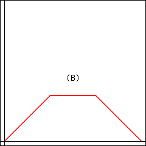
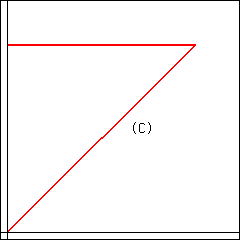
The graph of Erin’s distance from home is
(A)
(B)
(C)
(D)
none of the above
Answer.
\(\text{(B)}\)
Solution.
A graph is also shown below.
Alternate graph:
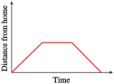
The graphs in Example 2.60 are piecewise linear, because Forrest traveled at a constant rate in each segment. In addition to choosing a graph that is increasing, decreasing, or constant to model a process, we can consider graphs that bend upward or downward. The bend is called the concavity of the graph.
Example2.62.
The two functions described in this example are both increasing functions, but they increase in different ways. Match each function to its graph and to the appropriate table of values.
The number of flu cases reported at an urban medical center during an epidemic is an increasing function of time, and it is growing at a faster and faster rate.
The temperature of a potato placed in a hot oven increases rapidly at first, then more slowly as it approaches the temperature of the oven.
\((1)\)
\(x\)
\(0\)
\(2\)
\(5\)
\(10\)
\(15\)
\(y\)
\(70\)
\(89\)
\(123\)
\(217\)
\(383\)
\((2)\)
\(x\)
\(0\)
\(2\)
\(5\)
\(10\)
\(15\)
\(y\)
\(70\)
\(219\)
\(341\)
\(419\)
\(441\)
Solution.
The number of flu cases is described by graph (A) and table (1). The function values in table (1) increase at an increasing rate. We can see this by computing the rate of change over successive time intervals.
\begin{gather*}
x = 0 \text{ to } x = 5: ~~~~~~~~m = \frac{\Delta y}{\Delta x}=\frac{123-70}{5-0} = 10.6\\
\\
x = 5\text{ to } x = 10:~~~~~~~~ m = \frac{\Delta y}{\Delta x}=\frac{217-123}{10-5} = 18.8\\
\\
x = 10 \text{ to } x = 15:~~~~~~~~m = \frac{\Delta y}{\Delta x}
=\frac{383 - 217}{15 - 10} = 33.2
\end{gather*}
The increasing rates can be seen in the figure below; the graph bends upward as the slopes increase.
The temperature of the potato is described by graph (B) and table (2). The function values in table (2) increase, but at a decreasing rate.
\begin{gather*}
x = 0\text { to } x = 5:~~~~~~~~m =\frac{\Delta y}{\Delta x}=\frac{341-70}{5 - 0}= 54.2\\
\\
x = 5 \text{ to } x = 10:~~~~~~~~m =\frac{\Delta y}{\Delta x}=\frac{419 - 341}{10 - 5}= 15.6\\
\\
x = 10 \text{ to } x = 15:~~~~~~~~m =\frac{\Delta y}{\Delta x}=\frac{441 - 419}{15 - 10}= 4.4
\end{gather*}
The decreasing slopes can be seen in the figure below. The graph is increasing but bends downward.
A graph that bends upward is called concave up, and one that bends down is concave down.
Checkpoint2.63.QuickCheck 1.
A graph whose slopes decrease for increasing \(x\) is called
increasing.
decreasing.
concave up.
concave down.
Answer.
\(\text{concave down.}\)
Solution.
A graph whose slopes decrease for increasing \(x\) is called concave down.
Checkpoint2.64.Practice 2.
Francine bought a cup of cocoa at the cafeteria. The cocoa cooled off rapidly at first, and then gradually approached room temperature. Which graph more accurately reflects the temperature of the cocoa as a function of time?
(a)
(b)
Explain why. (Select all that apply.)
The graph has a steep negative slope at first, corresponding to an initial rapid drop in the temperature of the cocoa.
Yes
No
The graph becomes closer to a horizontal line, corresponding to the cocoa approaching room temperature.
Yes
No
The graph has a slight negative slope at first, corresponding to an initial rapid drop in the temperature of the cocoa.
Yes
No
The graph becomes grows steeper and steeper, corresponding to the cocoa approaching room temperature.
Yes
No
Is the graph you chose concave up or concave down?
Concave up
Concave down
Answer1.
\(\text{(a)}\)
Answer2.
\(\text{Yes}\)
Answer3.
\(\text{Yes}\)
Answer4.
\(\text{No}\)
Answer5.
\(\text{No}\)
Answer6.
\(\text{Concave up}\)
Solution.
Graph (a): The graph has a steep negative slope at first, corresponding to an initial rapid drop in the temperature of the cocoa. The graph becomes closer to a horizontal line, corresponding to the cocoa approaching room temperature. The graph is concave up.
Checkpoint2.65.Pause and Reflect.
How can you tell from a table of values whether a function is concave up or concave down?
Checkpoint2.66.Pause and Reflect.
How can you tell from a table of values whether a function is concave up or concave down?
SubsectionUsing the Basic Functions as Models
In Section 1.5 we considered some situations that can be modeled by linear functions. In this section, we consider some situations that can be modeled by the other basic functions. Example 2.67 illustrates an application of the function \(f (x) =\sqrt{x}\text{.}\)
Example2.67.
The speed of sound is a function of the temperature of the air in kelvins. (The temperature, \(T\text{,}\) in kelvins is given by \(T = C + 273\text{,}\) where \(C\) is the temperature in degrees Celsius.) The table shows the speed of sound, \(s\text{,}\) in meters per second, at various temperatures, \(T\text{.}\)
\(T ~ (\degree K)\)
\(0\)
\(20\)
\(50\)
\(100\)
\(200\)
\(400\)
\(T ~ (\text{m/sec})\)
\(0\)
\(89.7\)
\(141.8\)
\(200.6\)
\(283.7\)
\(401.2\)
Plot the data to obtain a graph. Which of the basic functions does your graph most resemble?
Find a value of \(k\) so that \(s = kf(T)\) fits the data.
On a summer night when the temperature is \(20\degree\) Celsius, you see a flash of lightning, and \(6\) seconds later you hear the thunderclap. Use your function to estimate your distance from the thunderstorm.
Solution.
The graph of the data is shown below. The shape of the graph reminds us of the square root function, \(y = \sqrt{x}\text{.}\)
We are looking for a value of \(k\) so that the function \(f(T) = k \sqrt{T}\) fits the data. We substitute one of the data points into the formula and solve for \(k\text{.}\) If we choose the point \((100, 200.6)\text{,}\) we obtain
\begin{equation*}
200.6 = k \sqrt{100 }
\end{equation*}
and solving for \(k\) yields \(k = 20.06\text{.}\) We can check that the formula \(s = 20.06 \sqrt{T} \) is a good fit for the rest of the data points as well. Thus, we suggest the function
\begin{equation*}
f (T) = 20.06\sqrt{T}
\end{equation*}
as a model for the speed of sound.
First, we use the model to calculate the speed of sound at a temperature of \(20\degree\) Celsius. The Kelvin temperature is
\begin{equation*}
T = 20 + 273 = 293
\end{equation*}
so we evaluate \(s = f (T)\) for \(T = 293\text{.}\)
Thus, \(s\) is approximately 343.4 meters per second.
The lightning and the thunderclap occur simultaneously, and the speed of light is so fast (about 30,000,000 meters per second) that we see the lightning flash as it occurs. So if the sound of the thunderclap takes \(6\) seconds after the flash to reach us, we can use our calculated speed of sound to find our distance from the storm.
The thunderstorm is \(2060\) meters, or about \(1.3\) miles, away.
Checkpoint2.68.QuickCheck 2.
Which graph is concave down wherever it is defined?
\(\displaystyle y=x^3\)
\(\displaystyle y=\dfrac{1}{x}\)
\(\displaystyle y=\sqrt{3}{x}\)
\(\displaystyle y=\sqrt{x}\)
Answer.
\(\text{Choice 4}\)
Solution.
The graph of \(y=\sqrt{x}\) is concave down.
Checkpoint2.69.Practice 3.
The ultraviolet index (UVI) is issued by the National Weather Service as a forecast of the amount of ultraviolet radiation expected to reach Earth around noon on a given day. The data show how much exposure to the sun people can take before risking sunburn.
UVI
\(2\)
\(3\)
\(4\)
\(5\)
\(6\)
\(8\)
\(10\)
\(12\)
Minutes to burn (more sensitive)
\(30\)
\(20\)
\(15\)
\(12\)
\(10\)
\(7.5\)
\(6\)
\(5\)
Minutes to burn (more sensitive)
\(150\)
\(100\)
\(75\)
\(60\)
\(50\)
\(37.5\)
\(30\)
\(25\)
Plot \(m\text{,}\) the minutes to burn, against \(u\text{,}\) the UVI, to obtain two graphs, one for people who are more sensitive to sunburn, and another for people less sensitive to sunburn. Which of the basic functions do your graphs most resemble?
\(\displaystyle y= x^2 \)
\(\displaystyle y= x^3 \)
\(\displaystyle y= \sqrt{x} \)
\(\displaystyle y= \sqrt[3]{x} \)
\(\displaystyle y= \frac{1}{x} \)
\(\displaystyle y= \frac{1}{x^2} \)
\(\displaystyle y= x \)
\(\displaystyle y= \left| x\right|\)
For each graph, find a value of \(k\) so that \(m = k f(u)\) fits the data.
More sensitive: \(k=\)
Less sensitive: \(k=\)
Answer1.
\(\text{Choice 5}\)
Answer2.
\(60\)
Answer3.
\(300\)
Solution.
The graphs are shown below. The shapes of the graphs resemble \(f (x) = \dfrac{1}{x}\text{.}\)
More sensitive: \(k = 60\text{,}\) Less sensitive: \(k = 300\)
The graphs for part (a):
Checkpoint2.70.QuickCheck 3.
To decide which basic function might model a set of data, we can
plot the data.
look at the variables.
choose scales for the axes.
calculate the slope.
Answer.
\(\text{plot the data.}\)
Solution.
To decide which basic function might model a set of data, we can plot the data.
At this point, a word of caution is in order. There is more to choosing a model than finding a curve that fits the data. A model based purely on the data is called an empirical model. However, many functions have similar shapes over small intervals of their input variables, and there may be several candidates that model the data. Such a model simply describes the general shape of the data set; the parameters of the model do not necessarily correspond to any actual process.
In contrast, mechanistic models provide insight into the biological, chemical, or physical process that is thought to govern the phenomenon under study. Parameters derived from mechanistic models are quantitative estimates of real system properties. Here is what GraphPad Software has to say about modeling:
"Choosing a model is a scientific decision. You should base your choice on your understanding of chemistry or physiology (or genetics, etc.). The choice should not be based solely on the shape of the graph.
"Some programs . . . automatically fit data to hundreds or thousands of equations and then present you with the equation(s) that fit the data best. Using such a program is appealing because it frees you from the need to choose an equation. The problem is that the program has no understanding of the scientific context of your experiment. The equations that fit the data best are unlikely to correspond to scientifically meaningful models. You will not be able to interpret the best-fit values of the variables, and the results are unlikely to be useful for data analysis."
(Source: Fitting Models to Biological Data Using Linear and Nonlinear Regression, Motulsky & Christopoulos, GraphPad Software, 2003)
Checkpoint2.71.Pause and Reflect.
Explain the difference between an empirical model and a mechanistic model.
SubsectionModeling with Piecewise Functions
Recall that a piecewise function is defined by different formulas on different portions of the \(x\)-axis.
Example2.72.
In 2005, the income tax \(T(x)\) for a single taxpayer with a taxable income \(x\) under $150,000 was given by the following table.
If taxpayer’s income is...
Then the estimated tax is...
Over
But not over
Base tax
+Rate
Of the amount over
$0
$7300
$0
10%
$0
$7300
$29,700
$730
15%
$7300
$29,700
$71,950
$4090
25%
$29,700
$71,950
$150,150
$14,652.50
28%
$71,950
Calculate the tax on incomes of $500; $29,700; and $40,000.
Write a piecewise function for \(T(x)\text{.}\)
Graph the function \(T(x)\text{.}\)
Solution.
An income of \(x = 500\) is in the first tax bracket, so the tax is
The first two columns of the table give the tax brackets, or the \(x\)-intervals on which each piece of the function is defined. In each bracket, the tax \(T(x)\) is given by
\begin{equation*}
\text{Base tax} + \text{Rate}\cdot(\text{Amount over bracket base})
\end{equation*}
For example, the tax in the second bracket is
\begin{equation*}
T (x) = 730 + 0.15(x - 7300)
\end{equation*}
Writing the formulas for each of the four tax brackets gives us
The first piece starts at the origin and has slope \(0.10\text{.}\)
The second piece is in point-slope form, \(y = y_1 + m(x - x_1)\text{,}\) so it has slope \(0.15\) and passes through the point \((7300,~ 730)\text{.}\)
Similarly, the third piece has slope \(0.25\) and passes through \((29,700,~~ 40,490)\text{.}\)
The fourth piece has slope \(0.28\) and passes through \((71,950,~~ 14,652.5)\text{.}\)
You can check that for this function, all four pieces are connected at their endpoints, as shown below.
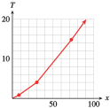
Checkpoint2.73.QuickCheck 4.
A piecewise function
must have no breaks in its graph.
can have more than one output at some inputs.
cannot have concavity.
none of the above
Answer.
\(\text{none of the above}\)
Solution.
none of the above
Checkpoint2.74.Practice 4.
As part of a water conservation program, the utilities commission in Arid, New Mexico, establishes a two-tier system of monthly billing for residential water usage: The commission charges a $30 service fee plus $2 per hundred cubic feet (HCF) of water if you use 50 HCF or less, and a $50 service fee plus $3 per HCF of water if you use over 50 HCF (1 HCF of water is about 750 gallons).
Write a piecewise formula for the water bill, \(B(w)\text{,}\) as a function of the amount of water used, \(w\text{,}\) in HCF.
\(B(w) =
\begin{cases}
f(w) \amp 0 \le w \le 50\\
g(w) \amp w \gt 50\\
\end{cases}\)
Look up the definitions of new terms in the Glossary.
Increasing
Decreasing
Concave up
Concave down
Empirical model
Mechanistic model
SubsubsectionCONCEPTS
The shape of a graph describes how the output variable changes.
A nonlinear graph may be concave up or concave down. If a graph is concave up, its slope is increasing. If it is concave down, its slope is decreasing.
The basic functions can be used to model physical situations.
Some situations can be modeled by piecewise functions
Fitting a curve to the data is not enough to produce a useful model; appropriate scientific principles should also be considered.
SubsubsectionSTUDY QUESTIONS
Sketch the graph of a function whose slope is positive and increasing.
Sketch the graph of a function whose slope is positive and decreasing.
Which basic function is increasing but bending downward?
Which basic function is decreasing but bending upward?
Why is it bad practice to choose a model purely on the shape of the data plot?
SubsubsectionSKILLS
Practice each skill in the Homework problems listed.
Sketch a graph whose shape models a situation: #1–18
Choose one of the basic graphs to fit a situation or a set of data: #19–24, 35–44
Decide whether the graph of a function is increasing or decreasing, concave up or concave down from a table of values: #25–28
Write and sketch a piecewise define function to model a situation: #45–48
ExercisesHomework 2.4
Exercise Group.
In Problems 1–4, which graph best illustrates each of the following situations?
1.
Your pulse rate during an aerobics class
2.
The stopping distances for cars traveling at various speeds
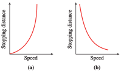
3.
Your income in terms of the number of hours you worked
4.
Your temperature during an illness
Exercise Group.
In Problems 5–8, sketch graphs to illustrate the following situations
5.
Halfway from your English class to your math class, you realize that you left your math book in the classroom. You retrieve the book, then walk to your math class. Graph the distance between you and your English classroom as a function of time, from the moment you originally leave the English classroom until you reach the math classroom.
6.
After you leave your math class, you start off toward your music class. Halfway there you meet an old friend, so you stop and chat for a while. Then you continue to the music class. Graph the distance between you and your math classroom as a function of time, from the moment you leave the math classroom until you reach the music classroom.
7.
Toni drives from home to meet her friend at the gym, which is halfway between their homes. They work out together at the gym; then they both go to the friend’s home for a snack. Finally Toni drives home. Graph the distance between Toni and her home as a function of time, from the moment she leaves home until she returns.
8.
While bicycling from home to school, Greg gets a flat tire. He repairs the tire in just a few minutes but decides to backtrack a few miles to a service station, where he cleans up. Finally, he bicycles the rest of the way to school. Graph the distance between Greg and his home as a function of time, from the moment he leaves home until he arrives at school.
Exercise Group.
Choose the graph that depicts the function described in Problems 9 and 10.
9.
Inflation is still rising, but by less each month.
10.
The price of wheat was rising more rapidly in 1996 than at any time during the previous decade.
Exercise Group.
In Problems 11 and 12, match each graph with the function it illustrates.
11.
The volume of a cylindrical container of constant height as a function of its radius
The time it takes to travel a fixed distance as a function of average speed
The simple interest earned at a given interest rate as a function of the investment
The number of Senators present versus the number absent in the U.S. Senate
12.
Unemployment was falling but is now steady.
Inflation, which rose slowly until last month, is now rising rapidly.
The birthrate rose steadily until 1990 but is now beginning to fall.
The price of gasoline has fallen steadily over the past few months.
Exercise Group.
Sketch possible graphs to illustrate the situations described in Problems 13–18.
13.
The height of a man as a function of his age, from birth to adulthood
14.
The number of people willing to buy a new high-definition television, as a function of its price
15.
The height of your head above the ground during a ride on a Ferris wheel
16.
The height above the ground of a rubber ball dropped from the top of a \(10\)-foot ladder
17.
The average age at which women first marry decreased from 1940 to 1960, but it has been increasing since then
18.
When you learn a foreign language, the number of vocabulary words you know increases slowly at first, then increases more rapidly, and finally starts to level off.
Exercise Group.
Each situation in Problems 19–24 can be modeled by a transformation of a basic function. Name the basic function and sketch a possible graph.
19.
The volume of a hot air balloon, as a function of its radius
20.
The length of a rectangle as a function of its width, if its area is \(24\) square feet
21.
The time it takes you to travel \(600\) miles, as a function of your average speed
22.
The sales tax on a purchase, as a function of its price
23.
The width of a square skylight, as a function of its area
24.
The area of a circle as a function of its diameter
Exercise Group.
In Problems 25–28, use the table of values to answer the questions.
Based on the given values, is the function increasing or decreasing?
Could the function be concave up, concave down, or linear?
25.
\(x\)
\(0\)
\(1\)
\(2\)
\(3\)
\(4\)
\(f(x)\)
\(1\)
\(1.5\)
\(2.25\)
\(3.375\)
\(5.0625\)
26.
\(x\)
\(0\)
\(1\)
\(2\)
\(3\)
\(4\)
\(g(x)\)
\(1\)
\(0.8\)
\(0.64\)
\(0.512\)
\(0.4096\)
27.
\(x\)
\(0\)
\(1\)
\(2\)
\(3\)
\(4\)
\(f(x)\)
\(0\)
\(0.174\)
\(0.342\)
\(0.5\)
\(0.643\)
28.
\(x\)
\(0\)
\(1\)
\(2\)
\(3\)
\(4\)
\(c(x)\)
\(1\)
\(0.985\)
\(0.940\)
\(0.866\)
\(0.766\)
Exercise Group.
In Problems 29–34,
Is the graph increasing or decreasing, concave up or concave down?
Match the graph of the function with the graph of its rate of change, shown in Figures A–F.
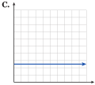
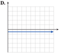
29.
30.
31.
32.
33.
34.
Exercise Group.
For Problems 35–40, plot the data; then decide which of the basic functions could describe the data.
35.
\(~x~\)
\(~0~\)
\(0.5\)
\(~1~\)
\(2\)
\(4\)
\(y\)
\(0\)
\(3.17\)
\(4\)
\(5.04\)
\(6.35\)
36.
\(~x~\)
\(~0~\)
\(0.5\)
\(~1~\)
\(2\)
\(4\)
\(y\)
\(0\)
\(5.66\)
\(8\)
\(11.31\)
\(16\)
37.
\(~x~\)
\(0.5\)
\(~1~\)
\(~2~\)
\(3\)
\(4\)
\(y\)
\(12\)
\(3\)
\(0.75\)
\(0.33\)
\(0.1875\)
38.
\(~x~\)
\(0.5\)
\(~1~\)
\(~2~\)
\(~3~\)
\(~4~\)
\(y\)
\(12\)
\(6\)
\(3\)
\(2\)
\(1.5\)
39.
\(~x~\)
\(~0~\)
\(0.5\)
\(~1~\)
\(~2~\)
\(3\)
\(y\)
\(0\)
\(0.125\)
\(0.5\)
\(2\)
\(4.5\)
40.
\(~x~\)
\(~0~\)
\(0.5\)
\(~1~\)
\(~2~\)
\(3\)
\(y\)
\(0\)
\(0.0125\)
\(0.1\)
\(0.8\)
\(2.7\)
41.
Four different functions are described below. Match each description with the appropriate table of values and with its graph.
As a chemical pollutant pours into a lake, its concentration is a function of time. The concentration of the pollutant initially increases quite rapidly, but due to the natural mixing and self-cleansing action of the lake, the concentration levels off and stabilizes at some saturation level.
An overnight express train travels at a constant speed across the Great Plains. The train’s distance from its point of origin is a function of time.
The population of a small suburb of a Florida city is a function of time. The population began increasing rather slowly, but it has continued to grow at a faster and faster rate.
The level of production at a manufacturing plant is a function of capital outlay, that is, the amount of money invested in the plant. At first, small increases in capital outlay result in large increases in production, but eventually the investors begin to experience diminishing returns on their money, so that although production continues to increase, it is at a disappointingly slow rate.
\(~x~\)
\(~1~\)
\(~2~\)
\(~3~\)
\(~4~\)
\(~5~\)
\(~6~\)
\(~7~\)
\(~8~\)
\(y\)
\(60\)
\(72\)
\(86\)
\(104\)
\(124\)
\(149\)
\(179\)
\(215\)
\(~x~\)
\(~1~\)
\(~2~\)
\(~3~\)
\(~4~\)
\(~5~\)
\(~6~\)
\(~7~\)
\(~8~\)
\(y\)
\(60\)
\(85\)
\(103\)
\(120\)
\(134\)
\(147\)
\(159\)
\(169\)
\(~x~\)
\(~1~\)
\(~2~\)
\(~3~\)
\(~4~\)
\(~5~\)
\(~6~\)
\(~7~\)
\(~8~\)
\(y\)
\(60\)
\(120\)
\(180\)
\(240\)
\(300\)
\(360\)
\(420\)
\(480\)
\(~x~\)
\(~1~\)
\(~2~\)
\(~3~\)
\(~4~\)
\(~5~\)
\(~6~\)
\(~7~\)
\(~8~\)
\(y\)
\(60\)
\(96\)
\(118\)
\(131\)
\(138\)
\(143\)
\(146\)
\(147\)
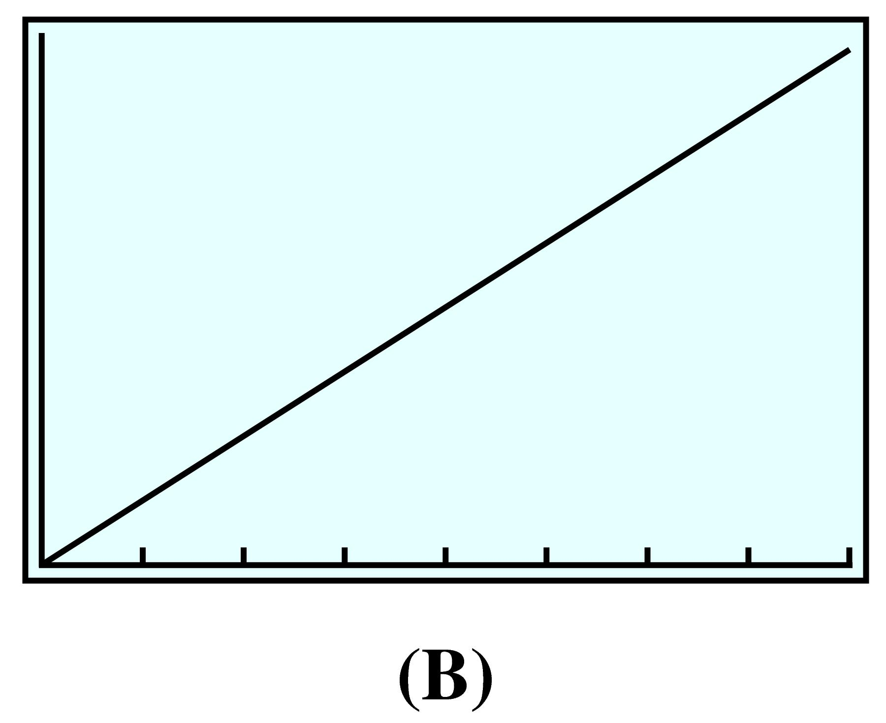
42.
Four different functions are described below. Match each description with the appropriate table of values and with its graph.
Fresh water flowing through Crystal Lake has gradually reduced the phosphate concentration to its natural level, and it is now stable.
The number of bacteria in a person during the course of an illness is a function of time. It increases rapidly at first, then decreases slowly as the patient recovers.
A squirrel drops a pine cone from the top of a California redwood. The height of the pine cone is a function of time, decreasing ever more rapidly as gravity accelerates its descent.
Enrollment in Ginny’s Weight Reduction program is a function of time. It began declining last fall. After the holidays, enrollment stabilized for a while but soon began to fall off again.
\(~x~\)
\(~0~\)
\(~1~\)
\(~2~\)
\(~3~\)
\(~4~\)
\(y\)
\(160\)
\(144\)
\(96\)
\(16\)
\(0\)
\(~x~\)
\(~0~\)
\(~1~\)
\(~2~\)
\(~3~\)
\(~4~\)
\(y\)
\(20\)
\(560\)
\(230\)
\(90\)
\(30\)
\(~x~\)
\(~0~\)
\(~1~\)
\(~2~\)
\(~3~\)
\(~4~\)
\(y\)
\(480\)
\(340\)
\(240\)
\(160\)
\(120\)
\(~x~\)
\(~0~\)
\(~1~\)
\(~2~\)
\(~3~\)
\(~4~\)
\(y\)
\(250\)
\(180\)
\(170\)
\(150\)
\(80\)
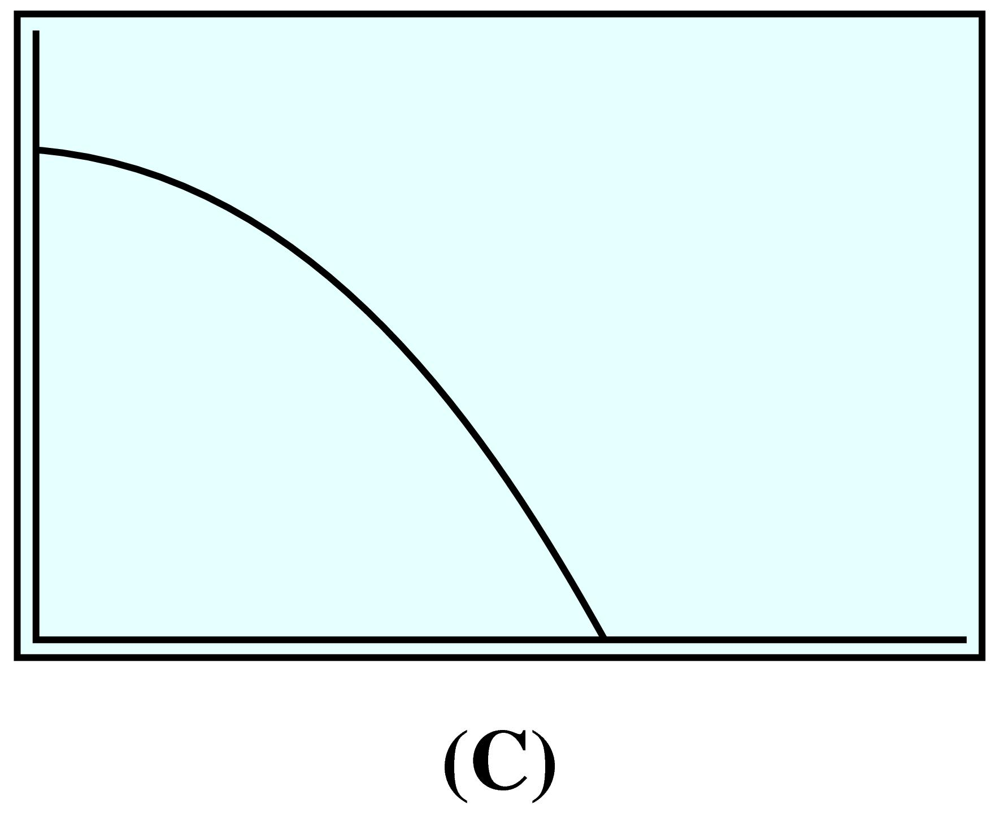
43.
The table shows the radii, \(r\text{,}\) of several gold coins, in centimeters, and their value, \(v\text{,}\) in dollars.
Radius
\(0.5\)
\(1\)
\(1.5\)
\(2\)
\(2.5\)
Value
\(200\)
\(800\)
\(1800\)
\(3200\)
\(5000\)
Which graph represents the data?
Which equation describes the function?
\(\displaystyle v=k\sqrt{r} \)
\(\displaystyle v=kr\)
\(\displaystyle v=kr^2\)
\(\displaystyle v=\dfrac{k}{r} \)
44.
The table shows how the amount of water, \(A\text{,}\) flowing past a point on a river is related to the width, \(W\text{,}\) of the river at that point.
Width (feet)
\(11\)
\(23\)
\(34\)
\(46\)
Amount of water \(\text{(ft}^3/\text{sec)} \)
\(23\)
\(34\)
\(41\)
\(47\)
Which graph represents the data?
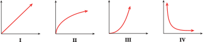
Which equation describes the function?
\(\displaystyle A=k\sqrt{W} \)
\(\displaystyle A=kW\)
\(\displaystyle A=kW^2\)
\(\displaystyle A=\dfrac{k}{W} \)
45.
If you order from Coldwater Creek, the shipping charges are given by the following table.
Purchase amount
Shipping charge
Up to $25
$5.95
$25.01 to $50
$7.95
$50.01 to $75
$9.95
$75.01 to $100
$10.95
Write a piecewise formula for \(S(x)\text{,}\) the shipping charge as a function of the purchase amount, \(x\text{.}\)
Graph \(S(x)\text{.}\)
46.
The Bopp-Busch Tool and Die Company markets its products to individuals, to contractors, and to wholesale distributors. The company offers three different price structures for its toggle bolts. If you order \(20\) or fewer boxes, the price is $\(2.50\) each. If you order more than \(20\) but no more than \(50\) boxes, the price is $\(2.25\) each. If you order more than \(50\) boxes, the price is $\(2.10\) each.
Write a piecewise formula for \(C(x)\text{,}\) the cost of ordering \(x\) boxes of toggle bolts.
Graph \(C(x)\text{.}\)
47.
Bob goes skydiving on his birthday. The function \(h(t)\) approximates Bob’s altitude \(t\) seconds into the trip.
Graph \(h(t)\text{.}\) Describe what you think is happening during each piece of the graph.
Find two times when Bob is at an altitude of \(6000\) feet.
48.
Jenni lives in the San Fernando Valley, where it is hot during summer days but cools down at night. Jenni uses the air conditioner as little as possible. The function \(T(h)\) approximates the temperature in Jenni’s house \(h\) hours after midnight.
Graph \(T(h)\text{.}\) Describe what you think is happening during each piece of the graph.
Find two times when the temperature inside the house is \(85\degree\) Fahrenheit.
49.
Lead nitrate and potassium iodide react in solution to produce lead iodide, which settles out, or precipitates, as a yellow solid at the bottom of the container. As you add more lead nitrate to the solution, more lead iodide is produced until all the potassium iodide is used up. The table shows the height of the precipitate in the container as a function of the amount of lead nitrate added. (Source: Hunt and Sykes, 1984)
Lead nitrate solution (cc)
\(0.5\)
\(1.0\)
\(1.5\)
\(2.0\)
\(2.5\)
\(3.0\)
\(3.5\)
\(4.0\)
Height of precipitate (mm)
\(2.8\)
\(4.8\)
\(6.2\)
\(7.4\)
\(9.5\)
\(9.6\)
\(9.6\)
\(9.6\)
Plot the data. Sketch a piecewise linear function with two parts to fit the data points
Calculate the slope of the increasing part of the graph, including units. What is the significance of the slope?
Write a formula for your piecewise function.
Interpret your graph in the context of the problem.
50.
The graph shows the temperature of \(1\) gram of water as a function of the amount of heat applied, in calories. Recall that water freezes at \(0\degree\)C and boils at \(100\degree\)C.
How much heat is required to raise the temperature of \(1\) gram of water by \(1\) degree?
How much heat is required to convert \(1\) gram of ice to water?
How much heat is required to convert \(1\) gram of water to steam?
Write a piecewise function to describe the graph.
51.
As the global population increases, many scientists believe it is approaching, or has already exceeded, the maximum number the Earth can sustain. This maximum number, or carrying capacity, depends on the finite natural resources of the planet—water, land, air, and materials—but also on how people use and preserve the resources. The graphs show four different ways that a growing population can approach its carrying capacity over time. (Source: Meadows, Randers, and Meadows, 2004)
Match each graph to one of the scenarios described in (a)–(d) and explain your choice.
Sigmoid growth: The population levels off smoothly below the carrying capacity.
Overshoot and collapse: The population exceeds the carrying capacity with severe damage to the resource base and is forced to decline rapidly to achieve a new balance with a reduced carrying capacity.
Continued growth: The carrying capacity is far away, or growing faster than the population.
Overshoot and oscillation: The population exceeds the carrying capacity without inflicting permanent damage, then oscillates around the limit before leveling off.
52.
The introduction of a new species into an environment can affect the growth of an existing species in various ways. The graphs show four hypothetical scenarios after Species A is introduced into an environment where Species B is established.
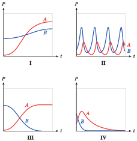
Match each graph to one of the scenarios described in (a)–(d) and explain your choice.
Predator-prey (sustained): Species A becomes a predator population that grows when its prey, Species B, is abundant, but declines when the prey population is small. The prey population grows when predators are scarce but shrinks when predators are abundant.
Predator-prey (extinction): Species A becomes a predator population that annihilates Species B, but then Species A itself declines toward extinction.
Competition: Species A and B have a common food source, and the Species A replaces Species B in the environment.
Symbiosis: Species A and B help each other to grow.